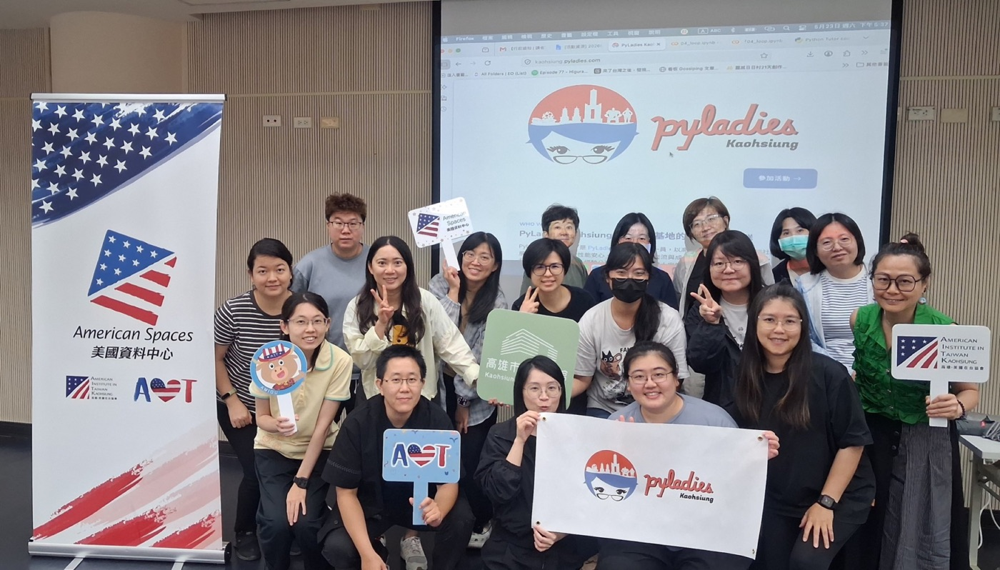
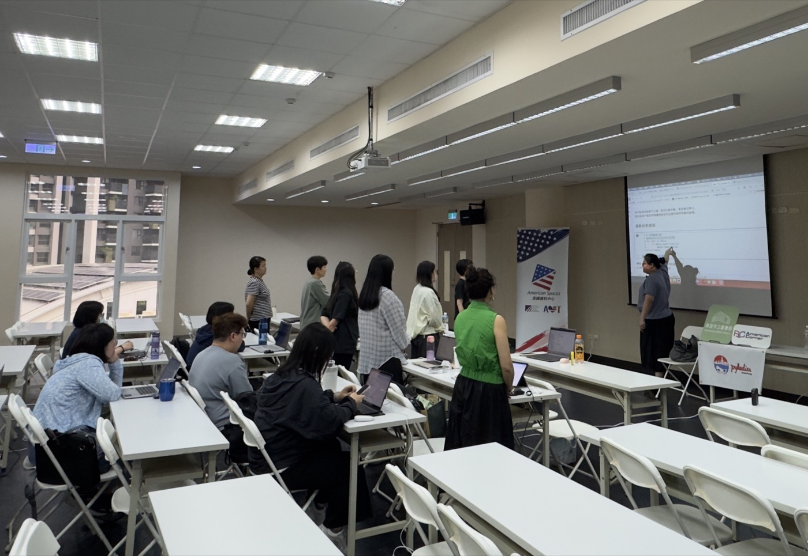
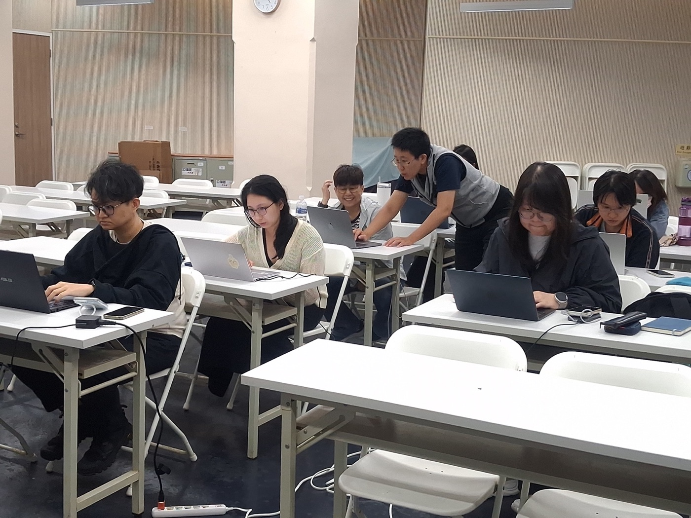
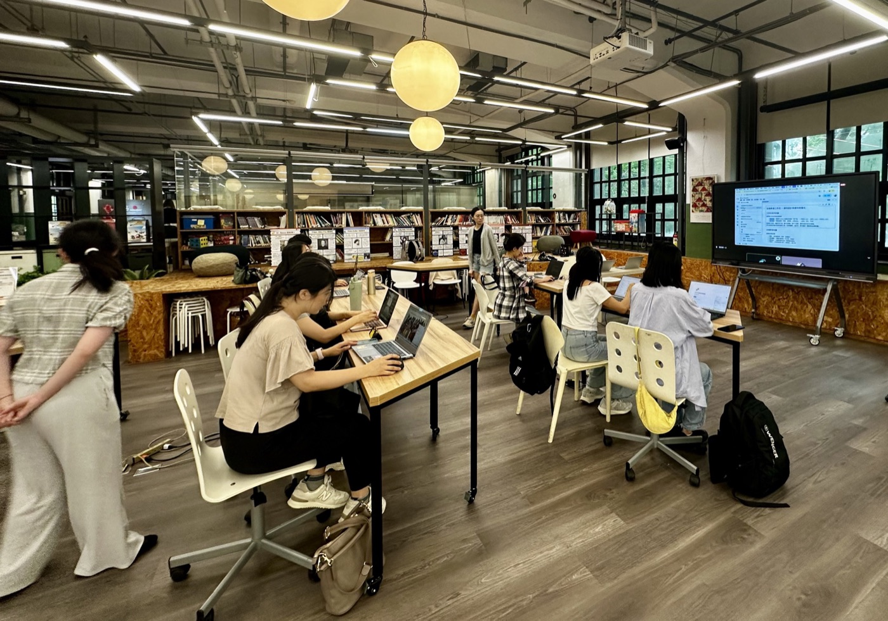

Python 入門工作坊
從零開始，透過實務範例與練習，在講師、助教與 AI 工具的協助下，實際動手加深程式邏輯的基礎概念，體驗更多 Python 的應用。
>>> import pyladies
PyLadies Kaohsiung Annual Recap · 2025–2026
讓女性安心、自信地學習、交流與成長
since 2025.10.21 · Kaohsiung
PyLadies 是一個國際組織，致力於幫助更多女性成為 Python 開源社群的積極參與者與領導者。目前全球有 145 個以上的 PyLadies 社群，PyLadies Kaohsiung 也是其中一員，我們於 2025 年 10 月 21 日在高雄成立。
實體活動維持全女性，提供安心學習與交流的空間；線上活動則連結各地的女性朋友，也和高雄的軟體社群同好一起，創造更多 Python 學習機會。

統計期間 2025.11 – 2026.10

我們一起做了哪些
從零開始，透過實務範例與練習，在講師、助教與 AI 工具的協助下，實際動手加深程式邏輯的基礎概念，體驗更多 Python 的應用。
從不同領域的經驗與故事中，看見更多可能。每個人的經歷，都有值得分享的地方；每一次分享，都有機會成為彼此前進的力量。
以美國的金融資料為例，學習網路爬蟲、資料管理、統計與視覺化、機器學習，從資料取得、整理、分析到模型建立，完整體驗資料科學的實作流程。
走進不同的社群，認識來自各地的科技領域從業者，在交流與分享中拓展彼此的視野，也讓原本不曾有交集的人，有機會相遇、彼此連結。
93%
活動報到率
實體 96% 線上 91%
186 / 200 人・2025.11 – 2026.10
報名時填寫自我介紹與報名動機，只有審核通過的人才能加入活動。



參與者這樣說

很喜歡都是女孩一起學習的感覺，很放鬆也很充實。2026.05 Python 入門工作坊
講師助教很適切的注意大家的進度，跟上的感覺真好。2026.05 Python 入門工作坊
這場分享會專業同時富有溫度，講者也不藏私的分享實務經驗與務實的學習方向，很是珍貴。2026.02 職涯分享
Q&A 的回答帶著正向鼓勵的色調，是很溫馨的體驗。2026.09 職涯分享

結合網站案例與練習有更了解實際爬蟲運作方式。2026.03 金融數據工作坊
會用生活化的語言來讓聽者容易理解（例如：網頁內容用料理與食材的比喻）。2026.03 金融數據工作坊
講者提供關鍵字與 roadmap 可以依照興趣需求再自行研究。概念之間的串接與因果關係非常有條理。2026.08 Discord Bot 工作坊

這場活動讓我從「害怕不適合」慢慢轉向「願意嘗試看看」。2026.02 職涯分享
作為剛接觸數據分析還在迷茫的初心者來說，每一位講者都是這條路的燈塔，聽完總覺得自己可以再前進一步。2026.02 職涯分享
聽三位路線不一樣的講者分享各自的經驗，讓人有「一切都有可能」的精神振奮感。2026.09 職涯分享




技術社群，也自己開發工具
以免伺服器費用、精簡化架構為原則，讓社群可以長期、低成本地運作。
PyLadies Kaohsiung 自用
審核制在 KKTIX＋Google Meet 上很難執行：審核結果不會通知報名者、志工要人工比對簽到名單放行線上活動參與。

高雄社群共用
高雄社群名牌卡從實體集章卡更改成線上護照：參加高雄社群的活動時掃描 QR code 就能集章，實體、線上活動都適用。


感謝夥伴
感謝社群夥伴講者 GT、Robin、Mars、Lisa、Amice、Ruby、Nancy、毛毛、ZihZih、龜珍，與志工夥伴 Mia、Cinie、Angel、Susu、JooJoo、Rainee
感謝合作夥伴美國在台協會高雄分處（AIT Kaohsiung）、美國資料中心（American Spaces）、高雄市立圖書館河堤分館、美國在台協會（AIT）、美國創新中心 American Innovation Center（AIC）、社團法人高雄市軟體開發者協會 KSDA、台灣產學策進會 TAIC